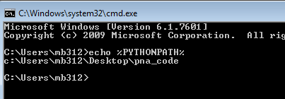

Putting stuff on the Python path¶
Remember the Python path?
>>> import sys
>>> print('\n'.join(sys.path))
...
We are going to be using the modules in fmri-methods-2015/for_exercises
this week.
It may get tiring to keep doing:
import sys
sys.path.append('/Users/mb312/code/fmri-methods-2015/for_exercises')
Is there any easier way?
Why yes - there is. In fact there are several.
The one we are going to use is the PYTHONPATH environment variable
(see https://docs.python.org/2/using/cmdline.html#envvar-PYTHONPATH).
If you are on a Mac¶
Open
Terminal.app;Open the file
~/.bash_profilein your text editor;Add the following line to the end:
export PYTHONPATH=$HOME/code/fmri-methods-2015/for_exercises
Save the file. * Close Terminal.app; * Start Terminal.app
again, and type this:
echo $PYTHONPATH
It should show something like
/Users/your_username/fmri-methods-2015/for_exercises. If not, come get one
of us.
If you are on Linux¶
Open your favorite terminal program;
Open the file
~/.bashrcin your text editor;Add the following line to the end:
export PYTHONPATH=$HOME/fmri-methods-2015/for_exercises
Save the file.
Close your terminal application;
Start your terminal application again, and type this:
echo $PYTHONPATH
It should show something like
/home/your_username/fmri-methods-2015/for_exercises. If not, come get one
of us.
If you are on Windows¶
Got to the Windows menu, right-click on “Computer” and select “Properties”:

From the computer properties dialog, select “Advanced system settings” on the left:

From the advanced system settings dialog, choose the “Environment variables” button:
In the Environment variables dialog, click the “New” button in the top half of the dialog, to make a new user variable:

Give the variable name as PYTHONPATH and the value is the path to
the fmri-methods-2015/for_exercises directory. Choose OK and OK again to
save this variable.
Now open a cmd Window (Windows key, then type cmd and press
Return). Type:
echo %PYTHONPATH%
to confirm the environment variable is correctly set:
If you want the IPython notebook to see this new PYTHONPATH
variable, you may need to close your terminal, open it again, and
restart ipython notebook, so that it picks up PYTHONPATH from
the environment settings.
You can check the current setting of environment variables, using the
os.environ dictionary:
>>> import os
>>> os.environ['PYTHONPATH']